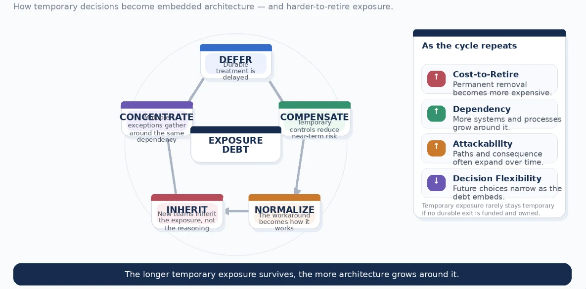
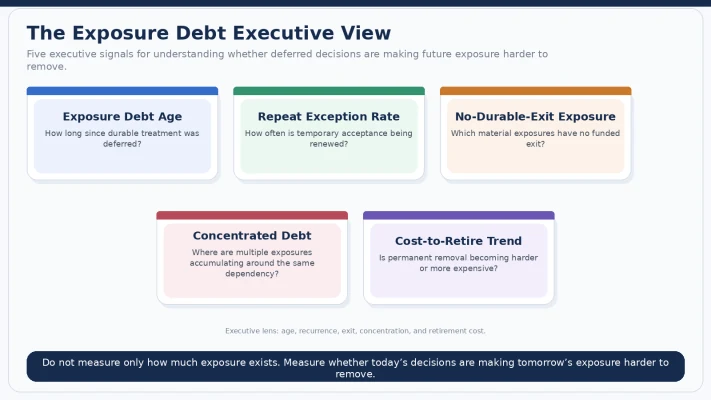

How deferred security decisions accumulate into Exposure Debt — and why the cost eventually shows up in architecture, operations, M&A, resilience, and executive choices.
A business separation needs to happen quickly.
There is no time to build the perfect target-state identity architecture.
So the team creates a temporary Active Directory forest to keep the divested environment running.
Six months, everyone agrees.
Long enough to separate the businesses, stabilize operations, and build the permanent solution.
Some legacy supply-chain applications still depend on old authentication behaviour. Modernizing them immediately would delay the transaction and create operational risk.
So compromises are made.
Aging Windows Server instances stay alive.
Legacy authentication remains available.
Compensating controls are added.
The decision is documented.
And, on the day it is made, the decision may be entirely rational.
Six months pass.
The temporary forest is still there.
Then twelve months.
Then a new cloud service needs access to an old application, so somebody builds a bridge.
Another project does the same.
The bridge becomes a pattern.
Eventually nobody describes the environment as temporary anymore.
Three years later, a narrow compromise made under transaction pressure has become part of the identity foundation for systems that did not even exist when the original exception was approved.
The people now operating the environment may never have met the people who made the initial decision.
The original risk acceptance may still exist somewhere.
The architecture certainly does.
I have seen versions of this pattern often enough that I think we need a better name for what is happening.
The original decision was not necessarily wrong.
The problem is that:
temporary decisions can outlive the conditions that made them sensible.
And once enough technology, process, and business dependency grows around them, the enterprise is no longer carrying a temporary exception.
It is carrying debt.
Technical debt, security debt, and Exposure Debt are not quite the same thing
The idea of technical debt has been around for decades.
The metaphor is useful because it describes a familiar trade-off:
we take a shortcut today to create speed or value, knowing that we may have to pay for that decision later.
The problem is not always taking the shortcut.
Sometimes speed genuinely matters.
The problem is forgetting that we borrowed anything.
Recent research increasingly treats technical debt as more than a code-maintainability issue. Thibodeau, for example, reframes technical debt as a broader organizational, security, safety, and sociotechnical risk. [1]
Research on Enterprise Architecture Debt goes further still, examining how accumulated architectural compromises can constrain modernization, agility, and resilience. [2]
That feels much closer to what I see in security.
But I want to distinguish another category.
I will call it:
Exposure Debt
I am proposing Exposure Debt as a leadership lens for this series, not as an established industry metric.
My working definition is:
Exposure Debt is the accumulated residual cyber exposure created when known security treatment is deferred, weakened, repeatedly accepted, or embedded into architecture faster than it is retired.
Technical debt often asks:
How much harder have we made this system to maintain or change?
Exposure Debt asks:
How much harder have we made this risk to remove?
The distinction matters.
An old authentication protocol may begin as technical debt.
But when:
new applications depend on it,
exceptions are repeatedly renewed,
attack paths accumulate around it,
business processes depend on it,
and removing it now threatens production availability,
the organization is carrying more than a maintenance problem.
It is carrying exposure created by previous decisions.
Exposure Debt rarely arrives dramatically
That is part of what makes it dangerous.
Nobody normally walks into an architecture meeting and says:
“Today we are going to create a strategic cyber liability that will constrain us for the next five years.”
The accumulation is much quieter.
I tend to see five stages.
DEFER → COMPENSATE → NORMALIZE → INHERIT → CONCENTRATE
1. Defer
There is a real fix.
Just not now.
The release is too important.
The acquisition timeline is fixed.
The vendor has not delivered an upgrade.
The business cannot tolerate the outage.
The replacement program is next year.
The decision can be perfectly defensible.
Debt begins when “not now” stops having a credible path to “later.”
2. Compensate
Security adds something to make the delay safer.
Segmentation.
Additional monitoring.
A WAF rule.
A privileged-access control.
Restricted network access.
An EDR policy.
Manual review.
These controls can be very effective.
But something subtle can happen.
The compensating control stops being a bridge to permanent treatment and becomes the reason permanent treatment keeps being postponed.
Instead of:
“This control protects us while we remove the problem.”
the conversation becomes:
“Why remove the problem? We already have the control.”
Those are not the same risk decision.
3. Normalize
Time changes language.
The “temporary environment” becomes:
the legacy environment.
Then:
the shared environment.
Eventually:
the environment.
The exception stops appearing in architecture conversations because everyone assumes it is simply how things work.
This is the stage that worries me most.
A known risk is at least visible.
A normalized risk starts disappearing into the architecture.
4. Inherit
Then people change.
Teams reorganize.
Businesses merge.
Platforms move.
An acquisition happens.
A service gets transferred to a new owner.
The new team inherits the technology.
It may not inherit the original reasoning.
This matters because risk acceptance is contextual.
The new owner may know what exists without knowing:
why it was accepted,
what assumptions supported the decision,
what controls were considered essential,
or:
when it was supposed to end.
The organization inherits the exposure but loses the memory.
5. Concentrate
Finally, individually tolerable exceptions begin intersecting.
Multiple systems depend on the same legacy identity service.
Several acquisitions rely on the same old database.
Temporary administrative access becomes common across multiple platforms.
Modern cloud workloads depend on one unsupported middleware component.
At that point, ten individually reasonable risk decisions can become one systemic exposure.
Nobody explicitly chose the concentration.
It emerged.
And this is where Exposure Debt becomes an executive problem rather than simply a security backlog.

Debt accumulates interest even when nobody touches it
One of the uncomfortable things about security debt is that doing nothing is not neutral.
A deferred exposure does not sit frozen in time.
The world around it changes.
Threat techniques improve.
Public exploit knowledge changes.
The architecture grows.
Business dependency increases.
Controls age.
Staff change.
Documentation becomes less reliable.
The vendor changes strategy.
The original owner leaves.
And remediation usually becomes harder because more systems now depend on the thing that needs to change.
Research on technical debt shows similar dynamics.
Levén, Broman, Besker, and Torkar found empirical support for the “broken windows” effect in technical debt: unmanaged debt can influence environments in ways that encourage further accumulation rather than remaining isolated. [3]
Besker, Martini, and Bosch have also examined how organizations triage technical debt against competing delivery pressures — exactly the tension security teams face when remediation competes with customer value and roadmap delivery. [4]
More recent empirical work treats technical-debt decisions as socio-technical decisions shaped not simply by engineering logic, but by stakeholder relationships, urgency, organizational incentives, and institutional pressures. [5]
Related work by Herath, Ahmad, and Gustavsson examines the Product Guardian role in large-scale agile environments — a specialized role designed to bridge technical and product perspectives and proactively address socio-technical debt. [11]
That finding resonates with something I argued in Article 5: when risk and debt cross technology, product, and organizational boundaries, progress often depends on making ownership explicit rather than assuming the normal team structure will somehow absorb it.
That resonates with me.
Because many of the worst security debts I have seen did not start with bad engineering.
They started with a perfectly understandable business sentence:
“We just need to get through this quarter.”
The problem was that nobody came back the next quarter.
Exposure Debt creates two costs executives eventually feel
There are many consequences, but two repeatedly reach the executive table.
Slower change
Imagine that old identity bridge again.
Every modernization program now has to account for it.
A cloud migration needs an exception.
A new SaaS platform needs a compatibility layer.
A Zero Trust initiative cannot assume modern authentication everywhere.
An acquisition integration needs another temporary bridge.
The old decision is now charging a tax against every new decision.
No single project necessarily carries the whole cost.
That is precisely why it survives.
The cost is distributed.
One engineering team loses two weeks.
Another builds a workaround.
Another delays decommissioning.
Another adds monitoring.
Nobody sees an invoice called:
“Interest payment on 2023 identity decision.”
But the business is paying it anyway.
Expanding attackability
The second cost is more direct.
The attack surface can grow around the original weakness.
What started as:
one isolated legacy service
becomes:
a dependency.
Then:
a bridge.
Then:
an identity path.
Then:
a route into systems that were never part of the original risk decision.
The vulnerability may not have changed.
The exposure has.
That distinction is fundamental.
Exposure Debt compounds not because the CVE gets older, but because the enterprise keeps changing around it.
This changes how I think about risk acceptance
There is one sentence in vulnerability meetings that always gets my attention:
“That risk has already been accepted.”
Maybe.
But accepted when?
By whom?
For what architecture?
Under what threat conditions?
With which compensating controls?
For how long?
And for which business consequence?
Article 4 introduced Risk-Acceptance Half-Life as a governance lens.
The older a risk acceptance gets, the more evidence I want that the assumptions behind it still hold.
Exposure Debt is what happens when that discipline fails repeatedly.
I increasingly think of risk acceptance as a loan.
Risk acceptance is a short-term loan, not a permanent waiver.
A loan can be entirely sensible.
But it has terms.
And it has a cost.
When we repeatedly extend the loan without revisiting the underlying conditions, we may no longer be managing temporary risk.
We may be financing permanent architecture.
Which leads to a line I would put in front of any technology leadership team:
If the same exception is renewed three times, it may no longer be an exception. It may be your architecture.
M&A makes Exposure Debt visible very quickly
Acquisitions are especially revealing.
You do not just acquire:
applications,
users,
infrastructure,
customers,
and revenue.
You acquire decisions.
Five-year-old vendor dependencies.
Temporary firewall rules.
Legacy identity models.
Unsupported databases.
Deferred upgrades.
Risk acceptances.
Compensating controls.
And sometimes entire platforms where nobody can reconstruct why a security trade-off was originally made.
The vulnerability scanner sees the technology.
It does not see the history.
It can tell me:
“This server has 37 Critical vulnerabilities.”
It cannot tell me:
why the server still exists,
why the business depends on it,
what replacement failed three years earlier,
why network isolation was considered sufficient,
who accepted the exposure,
or whether the assumptions survived the acquisition.
That is why I would not begin an integration conversation with:
“How many Critical vulnerabilities did we inherit?”
I would also ask:
“How much Exposure Debt did we inherit — and where is it concentrated?”
That question leads to a very different integration plan.
EdTech is an interesting place to see this pattern
I want to be careful here.
This is not an argument that EdTech is unregulated.
It is not.
And it is certainly not an argument that finance or healthcare are secure simply because they operate in heavily regulated environments.
They are not.
But the incentives can be different.
Financial services, healthcare, and payment environments frequently operate with highly visible regulatory, audit, or sector-control expectations.
That often creates a forcing function.
A control gap becomes:
an audit finding,
a regulatory concern,
a payment-compliance issue,
or:
a board-level remediation commitment.
Funding conversations tend to happen.
EdTech can have a more fragmented picture.
Privacy obligations such as COPPA, FERPA, GDPR, state laws, contractual commitments, and other jurisdiction-specific requirements can be significant.
But much of that regulatory conversation is naturally centered on:
student information,
privacy,
consent,
processing,
retention,
and appropriate use of data.
Meanwhile the underlying infrastructure may still be dealing with:
legacy identity,
old open-source dependencies,
acquired platforms,
rapid product releases,
shared services,
and:
very strong pressure to keep the student and teacher experience frictionless.
That creates an interesting tension.
Security may know the platform needs deeper modernization.
Product may know that adding friction risks adoption.
Engineering may know a rewrite would consume two roadmap cycles.
The business may know customers are asking for new capabilities now.
Nobody is acting irrationally.
Yet the debt accumulates.
That is precisely why I think Exposure Debt is useful as a leadership concept.
It gives the organization a way to discuss a risk that may be:
technically visible,
operationally tolerated,
financially deferred,
and strategically important
at the same time.
I would measure Exposure Debt differently from vulnerability backlog
I would not try to invent one magic “Exposure Debt Score.”
We have enough scores.
Instead, I would look for several indicators.
Exposure Debt Age
How long has the underlying exposure existed since management first decided to defer durable treatment?
This is different from vulnerability age.
The important clock is often the age of the decision.
Repeat Exception Rate
How much material exposure has been:
accepted,
renewed,
and renewed again?
A high repeat rate tells me that “temporary” treatment may be turning into the operating model.
No-Durable-Exit Exposure
How many material exposures have:
no funded retirement,
no replacement program,
no committed remediation path,
and no architecture decision likely to eliminate them?
This number should make leadership uncomfortable.
Concentrated Debt
Where are multiple deferred exposures accumulating around the same:
identity plane,
customer platform,
data store,
business process,
supplier,
cloud control plane,
or privileged access path?
This is where individually manageable risk can become systemic.
Cost-to-Retire Trend
Not:
“What will this cost to fix?”
but:
“Is the cost of removing this exposure increasing?”
If the estimate last year was one quarter of engineering work and this year it requires a multi-year platform transformation, that tells me something important.
The debt is charging interest.

I would not pretend there is a universal multiplier
The financial analogy can be tempting.
It is easy to say:
“This will cost three times as much next year.”
Sometimes it might.
Sometimes it might not.
The technical-debt literature supports the broader idea that delayed remediation can create continuing “interest” through maintenance cost, complexity, slower delivery, and architectural constraints. Research also shows that quantifying technical debt remains difficult and context-dependent. [6][7]
So I would resist creating a neat universal multiplier for Exposure Debt.
The important question is not whether the cost grew by exactly 3.2x.
The important question is:
Did keeping the exposure make our future choices more expensive, slower, or narrower?
If the answer is yes, debt accumulated.
In the identity example, the additional cost might come from:
more applications to migrate,
more integrations to unwind,
more identities to transition,
more testing,
greater availability requirements,
and less tolerance for disruption.
That is enough.
We do not need invented precision to make the executive point.
This is also becoming an AI problem
There is another reason I think the debt concept will matter more.
AI-enabled systems are generating their own forms of technical, safety, and security debt.
Tukur and colleagues argue that deferred safety and security issues in AI-enabled systems can accumulate across lifecycle, organizational, and sociotechnical dimensions. [8]
Their follow-on work on agentic systems extends the concern further, describing new forms of debt created by increasingly autonomous and interconnected AI components. [9]
Bhatia and colleagues' empirical work on self-admitted technical debt in machine-learning software similarly reinforces that ML systems are not immune to the same pressures that create debt elsewhere. [10]
The implication is important.
AI may make us much faster at:
building,
discovering,
integrating,
and:
automating.
But speed does not eliminate debt.
Sometimes speed creates more opportunities to defer decisions.
Which means the next generation of exposure management may face a very uncomfortable equation:
Discovery velocity ↑Development velocity ↑ Architecture dependency ↑ Remediation capacity ≠ infinite
If we do not govern the debt, faster technology may simply help us accumulate it faster.
What Security can contain — and what leadership has to fund
This is where responsibility matters.
Security can:
identify exposure,
challenge assumptions,
test compensating controls,
monitor threat change,
track acceptance age,
escalate stale decisions,
and verify whether risk is genuinely reduced.
Security cannot:
fund a platform replacement,
rewrite a product,
approve a two-year modernization program,
retire a revenue-generating service,
renegotiate a strategic vendor dependency,
or decide that an old platform’s remaining business value no longer justifies its cost.
Those are enterprise decisions.
Which is why I would not ask:
“Why hasn’t Security fixed the identity forest?”
I would ask:
“What does it cost to retire it today, what is making that cost grow, and who is deciding to continue carrying it?”
That is a much more useful executive conversation.
And it connects directly back to Article 5:
Security owns the integrity of the vulnerability-management system. Technology and business owners own the actions and consequences inside that system.
Exposure Debt does not disappear because Security documents it more accurately.
At some point somebody with budget, architecture authority, product authority, or risk authority has to decide to repay it.
A Monday-morning exercise
I would try this with the leadership team.
Do not start with the newest vulnerabilities.
Start with the oldest decisions.
Find ten material exposures that have survived more than one governance cycle.
Things that were:
accepted,
renewed,
mitigated temporarily,
scheduled for replacement,
or:
supposed to disappear after a project that never quite happened.
For each one, ask:
What was the original reason for deferral?
Would we still make the same decision today?
What assumptions supported the decision?
Are they still true?
What has grown around the exposure?
Applications?
Users?
Cloud integrations?
Business dependency?
Attack paths?
What would it cost to retire today?
And do we believe that cost is rising?
Is there a funded durable exit?
Not an intention.
A real exit.
Who owns the decision to keep carrying it?
A name.
If nobody can answer that last question, then we have found Exposure Debt without an accountable owner.
And as I argued in Article 5:
A vulnerability without an accountable owner is not being managed. It is being observed.
Exposure Debt without an owner is even worse.
It is being financed without anybody admitting they approved the loan.
My position
Technical debt makes systems harder to change.
Exposure Debt makes risk harder to remove.
The mechanisms are similar.
Short-term decisions narrow future options.
Dependencies accumulate.
Workarounds become permanent.
The organization pays interest in:
engineering effort,
architecture complexity,
operational fragility,
security controls,
integration cost,
slower modernization,
and eventually:
risk.
I do not think every security exception is bad.
I do not think every legacy system should be replaced immediately.
And I certainly do not think every temporary control represents poor leadership.
Sometimes carrying debt is the right decision.
Businesses borrow money for the same reason.
The discipline is knowing:
what you borrowed,
why you borrowed it,
what the interest looks like,
who owns it,
and:
how you eventually intend to repay it.
That is the difference between using debt strategically and simply accumulating it.
Which brings me back to the line I would leave with any executive team:
If the same exception is renewed three times, it is no longer an exception. It is your architecture.
And architecture has a long memory.
Next in this series
When AI Finds Exposure Faster Than Organizations Can Retire It
AI will continue making vulnerability discovery faster.
That is good.
But an organization carrying years of accumulated Exposure Debt may discover something uncomfortable:
the bottleneck is no longer finding risk.
It is deciding which old decisions to unwind first.
The next article will return to where this series started — and ask what happens when discovery velocity exceeds organizational risk-reduction capacity.
References & Further Reading
[1] Thibodeau, S. (2026). “Reconceptualizing Technical Debt as an Organizational Security, Safety, and Sociotechnical Risk.” Safety and Security Advances, 2(1). https://armgpublishing.com/journals/ssa/volume-2-issue-1/article-3/
[2] Slupczynski, A., Krauze, B., & Hacks, S. (2026). “Advancing Enterprise Architecture Debt: A Work System Theory Perspective on Modernization and Resilience.” Complex Systems Informatics and Modeling Quarterly, 46. https://openurl.ebsco.com/contentitem/gcd:193560997
[3] Levén, W., Broman, H., Besker, T., & Torkar, R. (2024). “The Broken Windows Theory Applies to Technical Debt.” Empirical Software Engineering. https://link.springer.com/article/10.1007/s10664-024-10456-6
[4] Besker, T., Martini, A., & Bosch, J. (2019). “Technical Debt Triage in Backlog Management.” IEEE/ACM International Conference on Technical Debt. https://ieeexplore.ieee.org/abstract/document/8786030/
[5] Bittencourt, J. P., Spinola, R., & Maciel, R. S. P. “Stakeholder Value Criteria for Technical Debt Acquisition Decisions: An Empirical Analysis.” ACM Transactions on Software Engineering and Methodology. https://dl.acm.org/doi/abs/10.1145/3808227
[6] Perera, J., Tempero, E., Tu, Y. C., & Blincoe, K. (2024). “A Systematic Mapping Study Exploring Quantification Approaches to Code, Design, and Architecture Technical Debt.” ACM. https://dl.acm.org/doi/abs/10.1145/3675393
[7] Carvalho, L., Biazotto, J. P., Feitosa, D., et al. (2026). “Technical Debt Management in Continuous Software Engineering: State of the Art and Research Agenda.” Journal of Software: Evolution and Process. https://onlinelibrary.wiley.com/doi/abs/10.1002/smr.70161
[8] Tukur, M., Adeyemo, H. B., Chen, T., Ali, N., Zarrad, A., Kazman, R., Agus, M., & Bahsoon, R. (2026). “On AI Safety and Security Technical Debt in Engineering AI-Enabled Systems.” arXiv:2607.23365. https://arxiv.org/abs/2607.23365
[9] Tukur, M., Adeyemo, H. B., Chen, T., Ali, N., Zarrad, A., Agus, M., Kazman, R., & Bahsoon, R. (2026). “From AI Technical Debt to Agentic Technical Debt: A Systematic Mapping of Root Causes and Manifestations in Agentic AI Systems.” arXiv:2608.01001. https://arxiv.org/abs/2608.01001
[10] Bhatia, A., Khomh, F., Adams, B., & Hassan, A. E. (2026). “An Empirical Study of Self-Admitted Technical Debt in Machine Learning Software.” ACM Transactions on Software Engineering and Methodology. https://dl.acm.org/doi/abs/10.1145/3785001
[11] Herath, P., Ahmad, M. O., & Gustavsson, T. (2025). “Product Guardian Role and Socio-Technical Debt Management in Large-Scale Agile.” ACM/IEEE International Symposium on Empirical Software Engineering and Measurement. https://dl.acm.org/doi/abs/10.1145/3727967.3756835